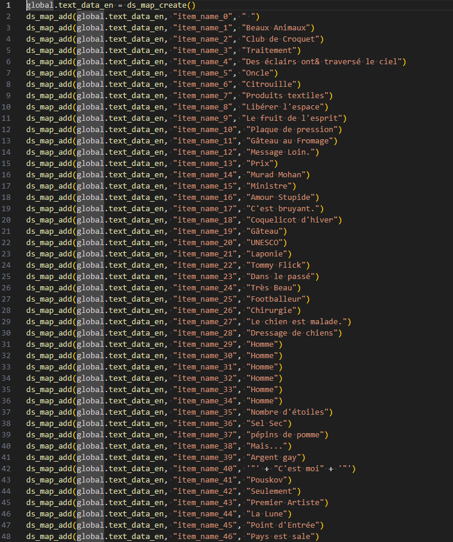

Projet Traduction (Augmentation de la richesse)
Introduction
Dans le cadre du BUT Informatique, j’ai eu l’occasion de participer à plusieurs projets en équipe. L’un des plus marquants a été celui de la traduction créative du jeu Undertale.
Ce site met l’accent sur la compétence 6 : Travailler dans une équipe informatique. À travers ce projet, je vais exposer le contexte, les résultats obtenus, et le bilan que j’en tire.
I. Les faits
Le contexte du projet
Le projet consistait à retraduire les dialogues du jeu Undertale d'une manière originale. Pour cela, nous avons utilisé un outil de traduction automatique que nous avons fait tourner en boucle entre différentes langues, générant ainsi des phrases complètement absurdes. L’objectif était de recréer une version humoristique du jeu tout en conservant sa structure.
Exemple de phrase traduite

Phrase originale : en blanc
Après 100 traductions : en rouge
Extrait du code de dialogue du jeu
Exemple d'intégration des phrases traduites dans le code source du jeu.
L'équipe

L’équipe se composait de 5 personnes. Chacun avait une section spécifique à traiter. Nous nous réunissions régulièrement via Live Share pour intégrer les nouvelles traductions dans le code. Alexis s’occupait ensuite de tester le résultat, notamment l’affichage des dialogues.
Outils utilisés
- Google Docs : pour centraliser et partager les lignes de dialogues
- Visual Studio Code (Live Share) : pour l’intégration collaborative
- Hypertranslate : pour automatiser les traductions multiples
Mes rôles et missions
J’étais chargé de traiter la première partie du document, de générer les traductions, puis de les intégrer dans le code source du jeu. Je veillais également à la cohérence du format et à la lisibilité du texte final.
II. Les résultats
Réussites
- Répartition efficace des tâches entre les membres
- Bonne coordination grâce à l’outil Live Share
- Créativité collective autour d’un projet original
Difficultés rencontrées
- Hypertranslate devenait instable après plusieurs requêtes
- Peu d’alternatives gratuites aussi efficaces
- Le projet n’a pas pu être finalisé
III. Bilan personnel
Ce que je referais de la même manière
L'utilisation de Google Docs et Live Share a permis une bonne fluidité dans le travail d’équipe. Le découpage des tâches était pertinent.
Ce que je changerais
Je mettrais en place un planning plus strict et des points de suivi réguliers pour éviter les retards d’intégration.
Leçons tirées
- Utiliser des outils de communication adaptés et flexibles (Discord, Trello…)
- Commencer l’intégration dès les premières traductions prêtes
- Faire preuve de flexibilité dans un cadre créatif
Conclusion
De septembre 2024 à juin 2025, j’ai développé mes compétences en travail d’équipe : meilleure communication, sens de l’initiative, et meilleure organisation.
Il me reste encore à renforcer mes capacités de gestion d’équipe sur des projets plus complexes. Mais cette expérience m’a permis de franchir une étape importante vers cet objectif.